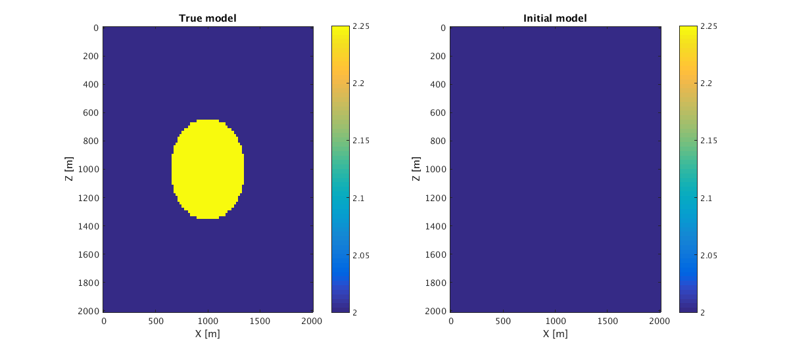
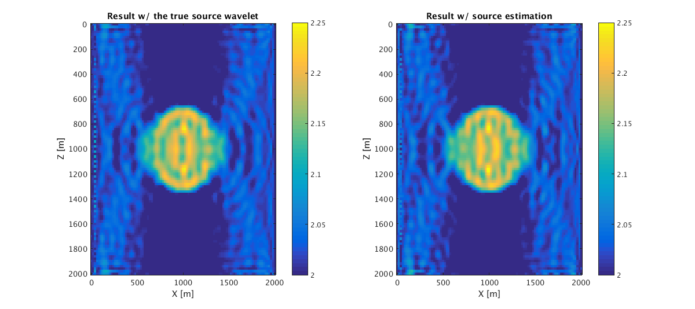
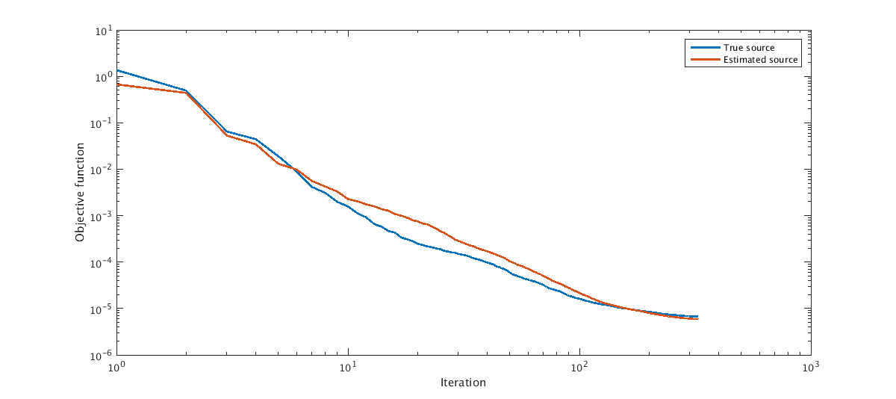

Written by Zhilong Fang (zfang@eoas.ubc.ca), March 2018.
Contents
Wavefield Reconstruction Inversion with Source Estimation
This script will show examples of waveform inversion with source estimation using the Camembert model. The theory behind this method, named Wavefield Reconstruction Inversion (WRI) with source estimation is described in [1].
The modeling used in this example is described in https://slim.gatech.edu/SoftwareDemos/applications/Modeling/2DAcousticFreqModeling/modeling.html.
System requirements:
- This script was tested using Matlab 2015b with the parallel computing toolbox.
- Parallelism is achieved by factorizing overdetermined systems (one for each frequency) in parallel. Each factorization requires about 1 GB.
- Runtime is about 1 hours when factorizing 3 overdetermined systems in parallel. Tested using 2.6GHz Intel processors.
Models
n = [101, 101]; d = [20, 20]; o = [0, 0]; vel = 2*ones(n); velini = vel; for i = 1:n(1) for j = 1:n(2) if norm([i-51,j-51])<18 vel(i,j) = 2.25; end end end % model.zsrc = d(1):d(1)*2:d(1)*(n(1)-2); model.xsrc = d(1)*2; model.zrec = d(1):d(1):d(1)*(n(1)-2); model.xrec = d(1)*(n(1)-2); [zz xx] = odn2grid(o,d,n); % The true model and initial model are figure;subplot(1,2,1) imagesc(zz,xx,vel);xlabel('X [m]');ylabel('Z [m]');a =caxis;colorbar title('True model') subplot(1,2,2) imagesc(zz,xx,velini);xlabel('X [m]');ylabel('Z [m]');caxis(a);colorbar title('Initial model') x0=10; y0=10; width=900; height=400; set(gcf,'units','points','position',[x0,y0,width,height])
Inversion result
%The inversion results w/ the true source wavelet and w/ the source estimation are: load('../results/Result_truesrc.mat'); m_t = Result.mf; v_t = reshape(1./sqrt(m_t),n); info_t = Result.info; info_t = info_t.obj; figure;subplot(1,2,1) imagesc(zz,xx,v_t);xlabel('X [m]');ylabel('Z [m]');caxis(a);colorbar title('Result w/ the true source wavelet') load('../results/Result_estsrc.mat'); m_e = Result.mf; v_e = reshape(1./sqrt(m_e),n); info_e = Result.info; info_e = info_e.obj; subplot(1,2,2) imagesc(zz,xx,v_e);xlabel('X [m]');ylabel('Z [m]');caxis(a);colorbar title('Result w/ source estimation') x0=10; y0=10; width=900; height=400; set(gcf,'units','points','position',[x0,y0,width,height]) %The comparison of the objective history is: nit = min(length(info_e),length(info_t)); info_e = info_e(:); info_t = info_t(:); xi = [1:nit]; xi = xi(:); figure;loglog(xi, [info_t(1:nit) info_e(1:nit)],'linewidth',2); xlabel('Iteration');ylabel('Objective function'); legend('True source','Estimated source') x0=10; y0=10; width=900; height=400; set(gcf,'units','points','position',[x0,y0,width,height]) %The compaison of the source wavelet is shown as follows. %The true source function is load('../results/src_true.mat'); src_true %The estimated source function is load('../results/src_est.mat'); src_est
src_true =
3.5794 13.2437 6.2177
src_est =
3.5810 - 0.0206i 13.1653 - 0.1947i 6.1422 - 0.1137i
  References
[1] Zhilong Fang, Rongrong Wang. Felix J. Herrmann, 2017, Source estimation for wavefield-reconstruction inversion.